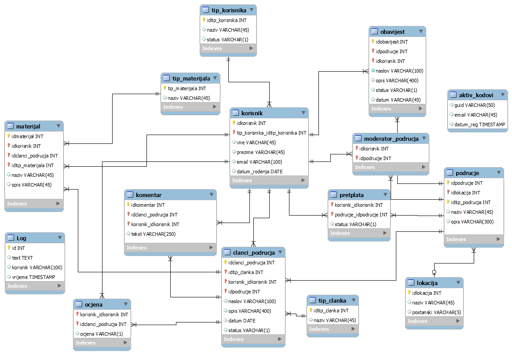
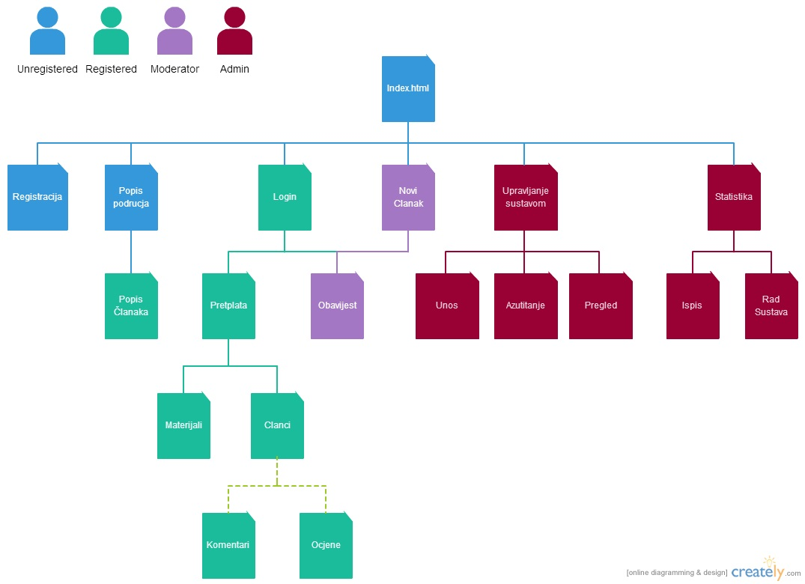

Dokumentacija projekta Vodič za preživljavanje
Kratak opis projekta i uloge:
Projekt pruža korisniku pregled i učenje tehnika preživljavanja u različitim područjima
Uloge:- Neregistrirani korisnik
- Registrirani korisnik
- Moderator
- Administrator
Definira „područja“ (pustinje, džungla, Arktika, …) i dodjeljuje moderatore za područja. Vidi statistiku korištenja sustava, pogrešnih/ispravnih prijava, po korisnicima i vremenskom periodu (od - do). Vidi aplikativnu statistiku koja pokazuje broja članaka po pojedinom području i/ili moderatoru, broj video materijala koje je postavio pojedini moderator i prosječnu ocjenu moderatora (koja je prosjek svih ocjena njegovih članaka).
Moderator:Vidi popis korisnika koji su se pretplatili za njegovo područje i može zabraniti pristup svojim člancima nekom korisniku (npr. kada uoči da korisnik ostavlja neprimjerene komentare). Za područje za koje je zadužen piše članke. Kreira uz svaki članak dodatne materijale: video (min 2), galerija slika (min 5) i dokument (min 1) u pojedinu kategoriju. Može poslati obavijest svim korisnicima o novom članku koji su pretplaćeni za područje u kojem je članak objavljen.
Registrirani korisnik:Mora se pretplatiti se na određeno područje da bi vidio članke. Može čitati članke i pregledavati materijale iz pretplaćenih područja. Uz svaki članak je prikazana prosječna ocjena. Može sortirati (po jednom elementu) i filtrirati članke prema ocjeni, datumu kreiranja ili autoru (moguće jedan, dva ili svi elementi). Može komentirati svaki članak i davati ocjenu. Vidi za odabrani članak komentare ostalih korisnika.
Neregistrirani korisnik:Vidi popis područja i odabirom područja vidi popis članka sa brojem koliko ima postavljenih videa, slika i dokumenata.
Era model:
Era model je vrlo bitna stvar u planiranju izrade projekta, prikazuje nam strukturu projekta prema kojemu se zelimo ravnati pri izradi projekta. Moj ERA model se sastoji od 15 tablica. U tablici korisnik nalaze se atributu idkorisnik kao primarni kljuc, tip korisnika koji odreduje da li je tip korisnika moderator, administrator ili registrirani korisnik. U tablici tip_korisnika nalazi se atribut status po kojemu saznajemo da li je korisnik blokiran. Tablica moderator_podrucja sluzi nam kao vanjska zablica sa dva vanjska kljuca po kojem dodjeljujemo obavjesti i pretplate odredenom korisniku. Tablica pretplata sluzi kako bi se registrirani korisnik pretplatio na određeno podrucje te vidio članke. Tablice komentar i ocjene služe kako bi korisnik mogao komentirati i ocjeniti određeni članak na području na kojem je pretplačen.
Navigacijski dijagram:
Navigacijski dijagram važan je pri izradi projekta jer nam on prikazuje kako će biti raspoređena prava za različite tipove korisnika u samom sustavu. Na slici možemo vidjeti da su različita prava u četiri tipa korisnika (Administrator, Moderator, Registrirani korisnik i Neregistrirani korisnik).
Popis i opis skripata
U izradi projekta koristili smo Smarty pa su sve skripte vezano uz html spremljene na lokaciji templates kao .tpl datoteke. Tu se nalazi index.tpl, footer.tpl, header.tpl, login.tpl, dokumentacija.tpl, skripte vezane uz administratora za uređivanje područja, dodavanje područja, postavljanje moderatura područjima, skripta vezana uz dnevnik i pomak vremena te grafikoni kod statistike. U folderu ajax nalaze se 3 php skripte admin.php, auth.php i korisnik.php u kojem se većinom nalaze upiti za dohvaćanje različitih podataka iz baze podataka. U mapi assets/js nalaze se javascript i Jquery vezan uz signup, admin.log, admin_podrucja, admin_korisnici itd.. Slike vezane za područja nalaze se u img/područja/[broj id podrucja]. Css koristi responzivni dizajn, preuzet je sa interneta ali su napravljenje mnoge izmjene. On se nalazi u folderu assets/css.
Opis projektnog rješenja, korištene tehnologije i skripte:
Za početak želim istaknuti da je izrada mog projekta trajala oko 60-80 sati bez vremena koje je utrošeno na proučavanje i traženje rješenja pojedninog problema. Dizajn je riješen pomoću preuzetog gotovog templata koji koristi responzivan dizajn (nije Bootstrap!). Sam sustava tj, svaki prijenosi ili izmjene podataka su napravljeni pomoću ajax-a i XML-a iz razloga jer nose najviše bodova kod obrane projekta, te je taj dio posebno istaknuti jer je na njega utrošeno najviše vremena. Također cijeli projekt je implementiran pomoću predložaka Smarty kombiniran sa php te tpl datotekama. Kod same izrade projekta sam se više bazirao na kofiguraciju te rad sustava dok sam malo zanemario same funkcionalnosti različitih tipova korisnika, te cilj projekta općenito, tj. uređivanje članaka, čitanje članaka, ocjene i komentari. Bilo je tu i puno problema na koje sam nailazio ponajviše na dijelu samog XML-a no na kraju je večina onoga što sam zamislio i realizirano tako da sam zadovoljan sa konačnim ishodom. Dosta sam se preračunao oko samog vremena trajanja projekta pa zbog toga nisu realizirani svi dijelovi, koje vijerujem da bi znao do kraja riješiti.